In case of local refinement (h or p), an interface between two cells might
carry different node values, which we call hanging nodes. Then,
additional compatibility conditions have to be imposed numerically, as we will
explain below in Section  .
.
A finite element space can be viewed as the function space spanned by a number of relatively simple basis functions. These basis functions are chosen such that they have a small support, in general at most as many cells as may be adjacent at any one vertex in the triangulation. Furthermore, they are usually defined on each cell within their domain of support separately, with some compatibility condition for the interfaces between these subdomains; compatibility conditions may be e.g. continuity along a face between two cells (for H1-conforming elements), equality of the mean value of the shape function on both sides of a face (Crouzeix-Raviart [8], Rannacher-Turek [13]) or its normal component (Raviart-Thomas [14], Brezzi-Douglas-Marini [7]).
Due to these properties, it is convenient for the implementation to consider a finite element space as consisting of a set of shape functions defined on a cell and compatibility conditions at the boundaries of the cell; this viewpoint stresses a purely local description of the space which enables us to do computations on each cell separately in most cases. A further abstraction is possible in some cases, where the shape functions can be computed on the unit cell and only afterwards need to be transformed to the actual grid cell; this is possible for interpolation elements, but not for all elements involving line integrals, normal derivatives, etc.
With these considerations in mind, the representation of a finite element in deal.II is a class that provides the shape functions and its derivatives on the unit cell (if possible, otherwise on the actual grid cell), and the transformation from unit to real cell and its derivatives. Furthermore, it provides necessary information to the class managing global degrees of freedom. This includes the kind of topological object (i.e. on vertices, line, quadrilaterals, etc.) a degree of freedom is associated with and the type of compatibility conditions between adjacent elements.
However, looking at actual finite element programs, one notes that most of the information listed above is not necessary to application programs. While compatibility and transformations are of interest to the internal functions of the library, application programs almost always are only interested in the restriction of a finite element field or shape function to a grid cell. Here, however, it is important to note that one usually is not interested in the finite element as a continuous function, but only at a specified set of points, for example in quadrature points located on a cell or a face. Since codes for finite element applications usually do not use the analytical representation of the shape functions (which can be rather complicated on the cells), but computations are done using quadrature formulæ.
In order to make access to actual finite elements more efficient and structured, deal.II offers an abstraction of a finite element restricted to a set of points on a cell. This interface is provided by the FEValues class described in the next subsection. The actual finite element class is hardly ever accessed directly by application programs and indeed by none of the existing applications built upon deal.II.
Analyzing finite element software, we observe that shape functions are always used in the same context: integration on a grid cell. This means, that shape functions are always used in combination with a quadrature rule. We exploit this relationship by introducing a special class FEValues combining quadrature and shape functions; in fact it can be considered to be the restriction of the trial space on the whole mesh to the quadrature points of a given quadrature rule applied to a single element of the triangulation. An object of this class will compute all values of the shape functions at the appropriate time and store them in arrays. These values come basically in two categories:
The two kinds of behavior are reflected in the fact that the tables of FEValues are built at different times. Tables of the first category are already filled upon construction, where FEValues objects obtain information about quadrature points and finite element shape functions. This is usually done before a loop over all cells starts. The second type of values is computed in a function that has to be called within the loop for each grid cell before any evaluations are done.
It is up to the interaction of FiniteElement and FEValues to do these computations as efficiently as possible. The user should give some hints though: FEValues takes a group of flags, telling it which fields need to be computed on each cell; if second derivatives are not used in a loop, they will not be computed on each element.
As mentioned briefly above, we obtain hanging nodes at interfaces between
cells of differing refinement,
1
see Figure  . The
degrees of freedom on the refined side of a face (for example the left side of
the face with end points P1 and P2 in the figure) are not all matched by
degrees of freedom on the coarse side, so in order to guarantee continuity
2
of the finite element space along
this face we need to impose additional constraints. In order to
illustrate the process, let Vh be
the original trial space including the continuity requirement on its
members, while
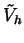
be a finite element space that is
constructed from the union of the same shape functions as in Vh, but
restricted to each cell separately;
therefore may contain
functions that are discontinuous along refined faces. While hanging
nodes carry degrees of freedom in
,
they do not do so in Vh.
. The
degrees of freedom on the refined side of a face (for example the left side of
the face with end points P1 and P2 in the figure) are not all matched by
degrees of freedom on the coarse side, so in order to guarantee continuity
2
of the finite element space along
this face we need to impose additional constraints. In order to
illustrate the process, let Vh be
the original trial space including the continuity requirement on its
members, while
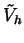
be a finite element space that is
constructed from the union of the same shape functions as in Vh, but
restricted to each cell separately;
therefore may contain
functions that are discontinuous along refined faces. While hanging
nodes carry degrees of freedom in
,
they do not do so in Vh.
Since doing computations with functions from is much simpler (because it can be done locally on each cell without taking care that there may be coarser or finer cells around, and because we would like to associate degrees of freedom to all vertices and lines, irrespective of their neighborhood), we would like to use as long as possible and use the constraints that Vh has over as late as possible in the solution of the problem. This can be done in the following way (cf. [9,12]; [15] also shows how to do this, but the algorithms are significantly more complex since more than one irregular node is allowed per face).
Assume we had to solve the problem: find 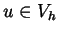,
such that for all


with a bilinear form
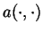
and the L2 scalar product
.
We would like to state this problem in
instead of
Vh. We take the standard finite element bases
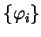
of Vh and
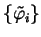
of
.
Now, because Vh is a subspace of
(it is
with some constraints) every function 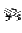
can be
written as a linear combination of basis functions of
:
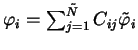.
This defines a matrix Cij. For example, for
bilinear shape functions the function 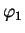
associated with node P1in Figure  can be written as
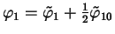;
the support of these
three shape functions are
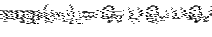,
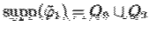,
and
can be written as
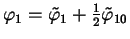;
the support of these
three shape functions are
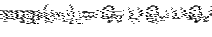,
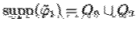,
and
 ,
respectively.
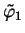
is
discontinuous along the line P1-P10, while
,
respectively.
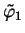
is
discontinuous along the line P1-P10, while
 is
discontinuous along the whole line P1-P2, because
is
discontinuous along the whole line P1-P2, because
 .
.
This representation of basis functions
implies that a function
must be representable as
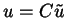
with
some function
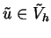,
where in the latter representation we
identified the function u by the vector of its nodal
values. For the grid in Figure  and bilinear elements,
the matrix C has the following form:
and bilinear elements,
the matrix C has the following form:
We can now restate the problem as follows: find
such that for all
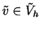

which amounts to solving the linear system of equations
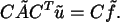
It should be noted that 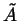
is assembled as usual, i.e. cell-wise
without the need to look at the neighboring cells, and that it is relatively
simple to generate
 in-place, i.e. without the need for another
matrix where we copy the result into. In particular, the sparsity pattern of
can be obtained from that of A by filling in some additional
places that can be computed beforehand. The same holds for the right hand
side. These properties result from the fact that each hanging node may only be
constrained once, which however limits the difference in refinement to one
level of cells in three space dimensions that are adjacent at one edge only.
In order to see how this property-conservation can be obtained, we use another
matrix 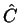
instead of C, where we add additional rows for each
constrained node such that it becomes square. In doing so, there is no need to
renumber the degrees of freedom in a way as to order constrained nodes to the
end. The additional rows in 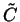
are set to zero only and the diagonal
elements of all rows apart from the newly added ones are equal to one, which
allows for very efficient storage mechanisms. Multiplying by 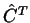
from the right, only multiplication with rows in
have
to be taken care of that contain either only zeroes (resulting in a blanked
out column in
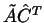
for each constrained node) or that contain
entries other than only the diagonal entry, which are nodes that constrain
another one (resulting in multiples of some columns being added to other
columns). The multiplication with
from the left can be done along
the same lines.
in-place, i.e. without the need for another
matrix where we copy the result into. In particular, the sparsity pattern of
can be obtained from that of A by filling in some additional
places that can be computed beforehand. The same holds for the right hand
side. These properties result from the fact that each hanging node may only be
constrained once, which however limits the difference in refinement to one
level of cells in three space dimensions that are adjacent at one edge only.
In order to see how this property-conservation can be obtained, we use another
matrix 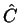
instead of C, where we add additional rows for each
constrained node such that it becomes square. In doing so, there is no need to
renumber the degrees of freedom in a way as to order constrained nodes to the
end. The additional rows in 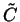
are set to zero only and the diagonal
elements of all rows apart from the newly added ones are equal to one, which
allows for very efficient storage mechanisms. Multiplying by 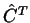
from the right, only multiplication with rows in
have
to be taken care of that contain either only zeroes (resulting in a blanked
out column in
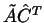
for each constrained node) or that contain
entries other than only the diagonal entry, which are nodes that constrain
another one (resulting in multiples of some columns being added to other
columns). The multiplication with
from the left can be done along
the same lines.
In practice, due to the special structure of , multiplication by from the left and from the right can be done at the same time and with writing the results into the same matrix where previously was stored. We call this process condensation. Lines and columns belonging to constrained nodes are filled with zeroes, effectively eliminating these degrees of freedom from the system of equations in the same way as if we used the original matrix C.